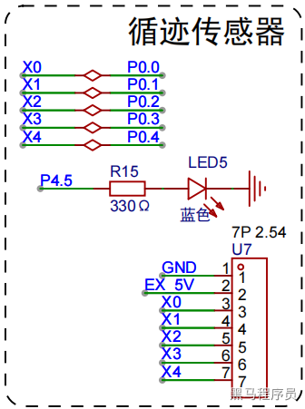
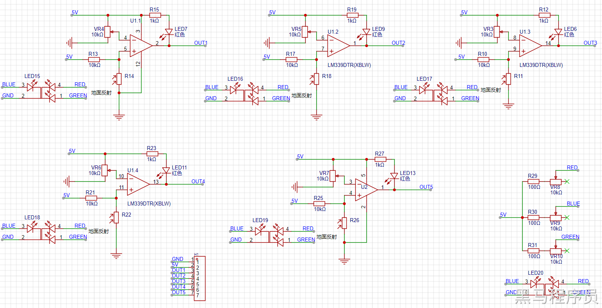
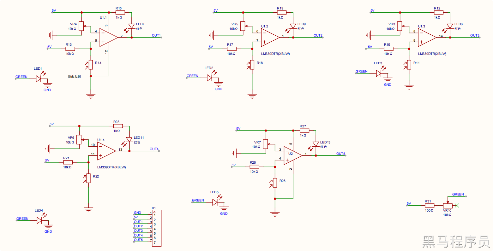
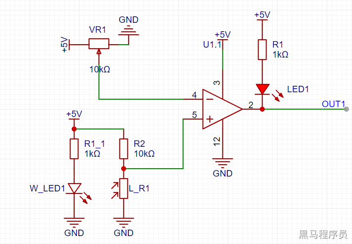
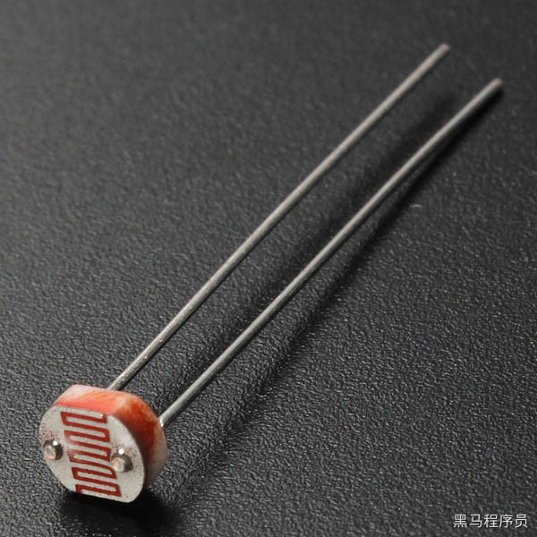
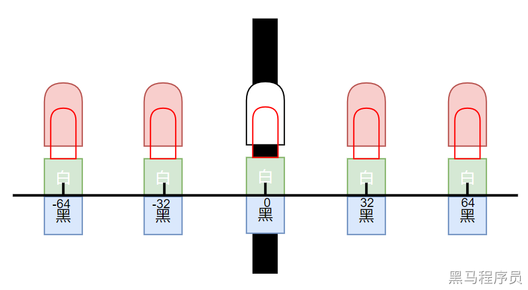
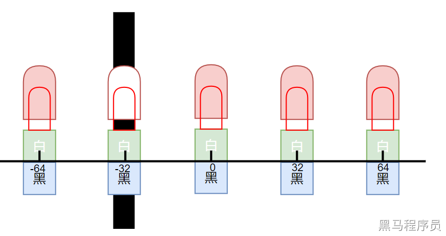
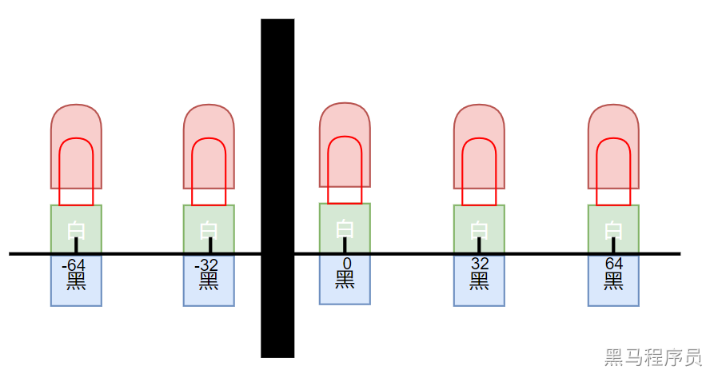
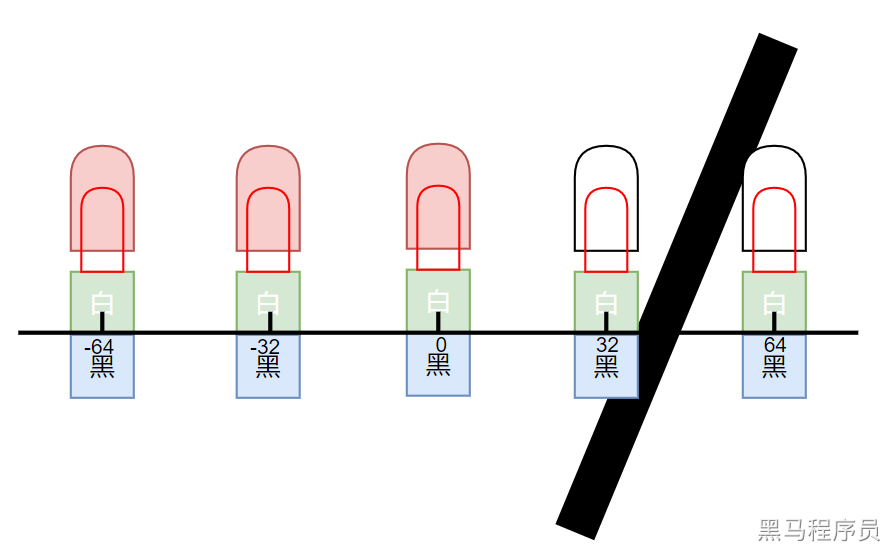

<!DOCTYPE lake>
<h2 data-lake-id="ChnKp" id="ChnKp"></h2><h2 data-lake-id="nhZSy" id="nhZSy"><span data-lake-id="u4993c8b4" id="u4993c8b4">单色灯模块原理图</span></h2><a class="yuque-card-link" href="https://www.yuque.com/attachments/yuque/0/2024/pdf/27903758/1730270629621-f24453d1-f112-42e1-a20d-0e19f23223d1.pdf">localdoc：SCH_Schematic3_1_2024-10-30.pdf</a><p data-lake-id="u271e5ff4" id="u271e5ff4"><strong><span data-lake-id="u72da7024" id="u72da7024">5组模块</span></strong></p><p data-lake-id="u6150ef00" id="u6150ef00"></p><a class="yuque-card-link" href="https://www.yuque.com/attachments/yuque/0/2026/pdf/27903758/1782694368848-c7999be9-beb7-4e44-8e2d-b8139c981340.pdf">localdoc：SCH_Schematic3_3_2026-06-29.pdf</a><p data-lake-id="u9574f2f0" id="u9574f2f0"></p><p data-lake-id="u1f3252aa" id="u1f3252aa"><br/></p><p data-lake-id="ub74fe2ad" id="ub74fe2ad"><strong><span data-lake-id="u29f257e1" id="u29f257e1">单色模块简化示意</span></strong></p><p data-lake-id="u7a8edde7" id="u7a8edde7"></p><p data-lake-id="u433b5961" id="u433b5961"><br/></p><h2 data-lake-id="fu0b6" id="fu0b6"><span data-lake-id="u32d9d6aa" id="u32d9d6aa">光敏电阻</span></h2><p data-lake-id="ue8a6785f" id="ue8a6785f"></p><p data-lake-id="u8d12518f" id="u8d12518f"><span data-lake-id="u2f1a3331" id="u2f1a3331">光敏电阻(LDR, Light Dependent Resistor)是一种半导体光电器件，其电阻值随光照强度变化而变化。</span><strong><span data-lake-id="u7f8f6441" id="u7f8f6441">光照强度越强</span></strong><span data-lake-id="u306bd67a" id="u306bd67a">，光敏电阻的</span><strong><span data-lake-id="u4e68d605" id="u4e68d605">电阻值越小</span></strong><span data-lake-id="u3593d15d" id="u3593d15d">；光照强度越弱，光敏电阻的电阻值越大。光敏电阻具有以下特点：</span></p><ul list="u28915378"><li data-lake-id="u89456ebf" fid="u1a9dbf81" id="u89456ebf"><strong><span data-lake-id="uca7a3556" id="uca7a3556">灵敏度高</span></strong><span data-lake-id="u59ac9912" id="u59ac9912">：光敏电阻对光照强度的变化非常敏感，即使很微小的光照变化也能引起电阻值的明显变化。</span></li><li data-lake-id="u3c97db54" fid="u1a9dbf81" id="u3c97db54"><strong><span data-lake-id="u545ee2ac" id="u545ee2ac">响应速度快</span></strong><span data-lake-id="uc1f3bb99" id="uc1f3bb99">：光敏电阻的光电流变化与光照强度的变化几乎是同步的，因此响应速度非常快。</span></li><li data-lake-id="ud571c78e" fid="u1a9dbf81" id="ud571c78e"><strong><span data-lake-id="uf86c9a51" id="uf86c9a51">光谱特性好</span></strong><span data-lake-id="u04e8012b" id="u04e8012b">：光敏电阻对不同波长的光具有不同的灵敏度，可以通过选择合适的材料来制备具有特定光谱特性的光敏电阻。</span></li><li data-lake-id="uea9803e9" fid="u1a9dbf81" id="uea9803e9"><strong><span data-lake-id="u3568d876" id="u3568d876">温度特性好</span></strong><span data-lake-id="u32536d11" id="u32536d11">：光敏电阻的电阻值随温度变化而变化，但这种变化相对较小，可以通过温度补偿来消除。</span></li><li data-lake-id="ud4a0d94b" fid="u1a9dbf81" id="ud4a0d94b"><strong><span data-lake-id="u46c9eea4" id="u46c9eea4">结构简单、价格低廉</span></strong><span data-lake-id="ub936ebf0" id="ub936ebf0">：光敏电阻的结构比较简单，制造成本低廉。</span></li></ul><p data-lake-id="ub622850d" id="ub622850d"><span data-lake-id="u1e21b350" id="u1e21b350">光敏电阻的主要应用包括：</span></p><ul list="ubc324631"><li data-lake-id="ub6b793a8" fid="u9f3ccee5" id="ub6b793a8"><strong><span data-lake-id="u34d7d8f1" id="u34d7d8f1">光度测量</span></strong><span data-lake-id="u1cb4c6f2" id="u1cb4c6f2">：光敏电阻可以用作光度计的光敏元件，测量环境的光照强度。</span></li><li data-lake-id="uf9a6ce35" fid="u9f3ccee5" id="uf9a6ce35"><strong><span data-lake-id="u8f984cc6" id="u8f984cc6">自动控制</span></strong><span data-lake-id="u7424b204" id="u7424b204">：光敏电阻可以用作自动控制电路的光敏元件，例如自动门、自动照明、自动曝光等。</span></li><li data-lake-id="uf9d30153" fid="u9f3ccee5" id="uf9d30153"><strong><span data-lake-id="u87c66a89" id="u87c66a89">光电检测</span></strong><span data-lake-id="u21d239df" id="u21d239df">：光敏电阻可以用作光电检测器件，例如烟雾报警器、气体探测器等。</span></li><li data-lake-id="uf6138dbc" fid="u9f3ccee5" id="uf6138dbc"><strong><span data-lake-id="ua97083a2" id="ua97083a2">光电通讯</span></strong><span data-lake-id="u0e0ba06a" id="u0e0ba06a">：光敏电阻可以用作光电通讯器件，例如光电耦合器等。</span></li></ul><h2 data-lake-id="WEWwt" id="WEWwt"><span data-lake-id="u660fc313" id="u660fc313">黑线检测原理</span></h2><h3 data-lake-id="hewxB" id="hewxB"><span data-lake-id="u619013b5" id="u619013b5">光敏电阻对着地面</span></h3><ol list="u8a1980f6"><li data-lake-id="u89b8e945" fid="u45196ed5" id="u89b8e945"><span data-lake-id="uecb9f139" id="uecb9f139">W_LED1亮起，光敏电阻L_R1收到光线</span></li><li data-lake-id="uf6d3b33e" fid="u45196ed5" id="uf6d3b33e"><span data-lake-id="ub3a5d975" id="ub3a5d975">光敏电阻阻值较小，例如：1kΩ。此时模拟比较器5号引脚分到电压大约为0.5V</span></li><li data-lake-id="u69f3ebd4" fid="u45196ed5" id="u69f3ebd4"><span data-lake-id="ud279c674" id="ud279c674">假如滑动变阻器的阻值处于中间位置，则模拟比较器4号引脚分到电压2.5V</span></li><li data-lake-id="u87a32bcd" fid="u45196ed5" id="u87a32bcd"><span data-lake-id="ub046b3ef" id="ub046b3ef">5引脚电压低于4引脚，模拟比较器2号引脚输出低电平</span></li><li data-lake-id="ueabf66d3" fid="u45196ed5" id="ueabf66d3"><span data-lake-id="uf40db3d6" id="uf40db3d6">LED1</span><strong><span data-lake-id="u5b8496a7" id="u5b8496a7">点亮</span></strong><span data-lake-id="u92373a59" id="u92373a59">，OUT1引脚输出</span><strong><span data-lake-id="ue685c2da" id="ue685c2da">低电平</span></strong></li></ol><h3 data-lake-id="bXUAl" id="bXUAl"><span data-lake-id="ue5a66c0e" id="ue5a66c0e">光敏电阻对着黑线</span></h3><ol list="u2c592020"><li data-lake-id="ubce81deb" fid="u45196ed5" id="ubce81deb"><span data-lake-id="u7fa1a3ab" id="u7fa1a3ab">W_LED1亮起，由于光线被黑线吸收大部分，光敏电阻L_R1无法收到光线</span></li><li data-lake-id="u935662ac" fid="u45196ed5" id="u935662ac"><span data-lake-id="ue177d152" id="ue177d152">光敏电阻阻值较大，例如：40kΩ。此时模拟比较器5号引脚分到电压为4.0V</span></li><li data-lake-id="ube5f906d" fid="u45196ed5" id="ube5f906d"><span data-lake-id="u86739264" id="u86739264">假如滑动变阻器的阻值处于中间位置，则模拟比较器4号引脚分到电压2.5V</span></li><li data-lake-id="ud8b51bb5" fid="u45196ed5" id="ud8b51bb5"><span data-lake-id="udce73cca" id="udce73cca">5引脚电压高于4引脚，模拟比较器2号引脚输出高电平</span></li><li data-lake-id="u9a688273" fid="u45196ed5" id="u9a688273"><span data-lake-id="u68d0e50e" id="u68d0e50e">LED1</span><strong><span data-lake-id="u9adc93a5" id="u9adc93a5">熄灭</span></strong><span data-lake-id="ub375d0c9" id="ub375d0c9">，OUT1引脚输出</span><strong><span data-lake-id="u07a01f2f" id="u07a01f2f">高电平</span></strong></li></ol><p data-lake-id="u714bba47" id="u714bba47"><strong><span data-lake-id="u2c77aabd" id="u2c77aabd">​</span></strong><br/></p><p data-lake-id="u600cc98e" id="u600cc98e"><span data-lake-id="u75df30d1" id="u75df30d1">我们根据哪个位置是高电平（LED熄灭），就可以直观地了解黑线位于什么位置。</span></p><p data-lake-id="u86cda9ee" id="u86cda9ee"><span data-lake-id="uc1302299" id="uc1302299">​</span><br/></p><p data-lake-id="u8bc7b108" id="u8bc7b108"><strong><span data-lake-id="ufec0858a" id="ufec0858a">调配滑动变阻器：</span></strong></p><ol list="u901782f5"><li data-lake-id="ue8f2b129" fid="u156f7650" id="ue8f2b129"><span data-lake-id="ud7dfc680" id="ud7dfc680">靠近地面全部亮起（光敏传感器收到地面反弹的光线）</span></li><li data-lake-id="u484f8c4e" fid="u156f7650" id="u484f8c4e"><span data-lake-id="u4991ba7c" id="u4991ba7c">抬高一定距离（5cm以上）统一灭掉（等同于遇到黑线）</span></li></ol><p data-lake-id="u8eb62a6d" id="u8eb62a6d"><strong><span data-lake-id="u47f13128" id="u47f13128">​</span></strong><br/></p><p data-lake-id="u7076cbf8" id="u7076cbf8"><strong><span data-lake-id="u528cda89" id="u528cda89">注意:</span></strong></p><p data-lake-id="uf5f926eb" id="uf5f926eb"><span data-lake-id="u9a990fa9" id="u9a990fa9">假如</span><strong><span data-lake-id="u0ca0a572" id="u0ca0a572">光敏电阻对着空气，</span></strong><span data-lake-id="uca68bdee" id="uca68bdee">光敏电阻也无法收到W_LED发出的光线，此时LED灯应处于熄灭状态，且所有IO口应输出高电平。</span></p><h2 data-lake-id="JiXKF" id="JiXKF"><span data-lake-id="uebeb34c0" id="uebeb34c0">循线原理</span></h2><ol list="u519786c1"><li data-lake-id="u822c6b33" fid="u5ce915a3" id="u822c6b33"><span data-lake-id="u973af96b" id="u973af96b">当前压线时，状态显示 (压倒黑线, 灯灭)</span></li></ol><p data-lake-id="u4a918195" id="u4a918195" style="padding-left: 2em"></p><p data-lake-id="u55ef907f" id="u55ef907f" style="padding-left: 2em"><span data-lake-id="u9a32688a" id="u9a32688a">​</span><br/></p><p data-lake-id="u845241ff" id="u845241ff" style="padding-left: 2em"><br/></p><ol list="uc803de93" start="2"><li data-lake-id="ud64dfa02" fid="u2e41d49f" id="ud64dfa02"><span data-lake-id="u167580e5" id="u167580e5">当未压线时，状态丢失。以上一次状态为准</span></li></ol><p data-lake-id="uf2679edc" id="uf2679edc" style="padding-left: 2em"></p><ol list="u2a02790e" start="3"><li data-lake-id="ufe18868c" fid="u95546e93" id="ufe18868c"><span data-lake-id="ub718a3ca" id="ub718a3ca">多个状态灭时，位置计算如下</span></li></ol><p data-lake-id="u886f4637" id="u886f4637" style="text-indent: 2em"><code data-lake-id="u20a022d4" id="u20a022d4"><span data-lake-id="uf30e5ad5" id="uf30e5ad5">Pos = (32 + 64) / 2</span></code></p><p data-lake-id="ucd911dd5" id="ucd911dd5" style="text-indent: 2em"><span data-lake-id="u69e865fa" id="u69e865fa">​</span><br/></p><h2 data-lake-id="TJ9bL" id="TJ9bL"><span data-lake-id="uace2d62c" id="uace2d62c">代码实现</span></h2><p data-lake-id="u172744f1" id="u172744f1"><br/></p><h3 data-lake-id="zSiyb" id="zSiyb"><span data-lake-id="ueb9f4bc5" id="ueb9f4bc5">声明头文件</span></h3><span class="yuque-card-unsupported">[codeblock]</span><h3 data-lake-id="XjEso" id="XjEso"><span data-lake-id="u757e6c72" id="u757e6c72">实现c代码</span></h3><span class="yuque-card-unsupported">[codeblock]</span>